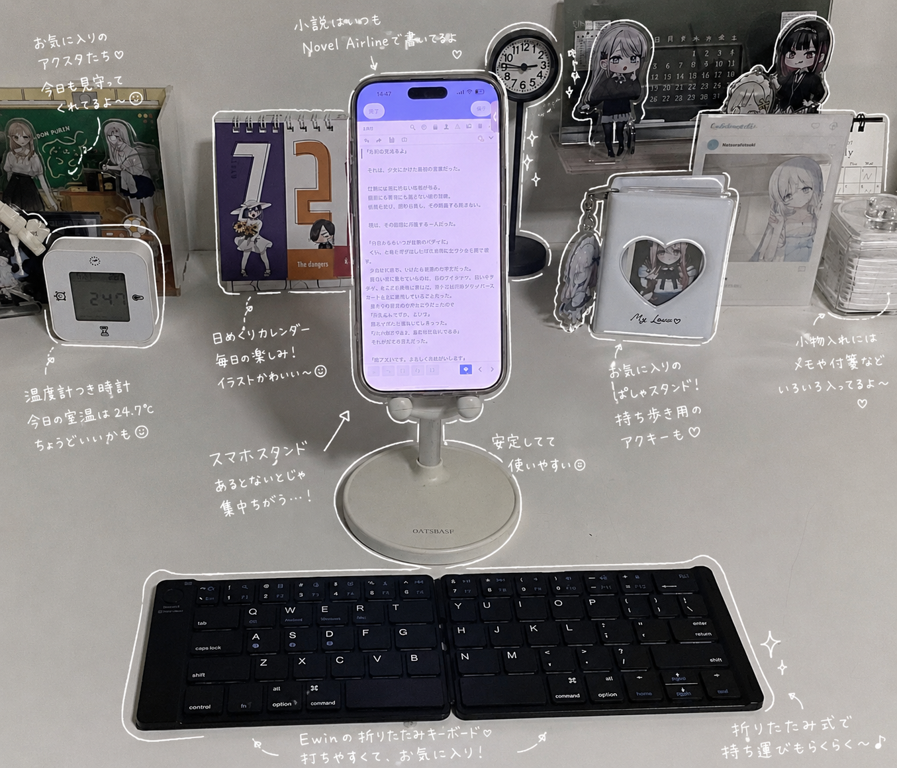
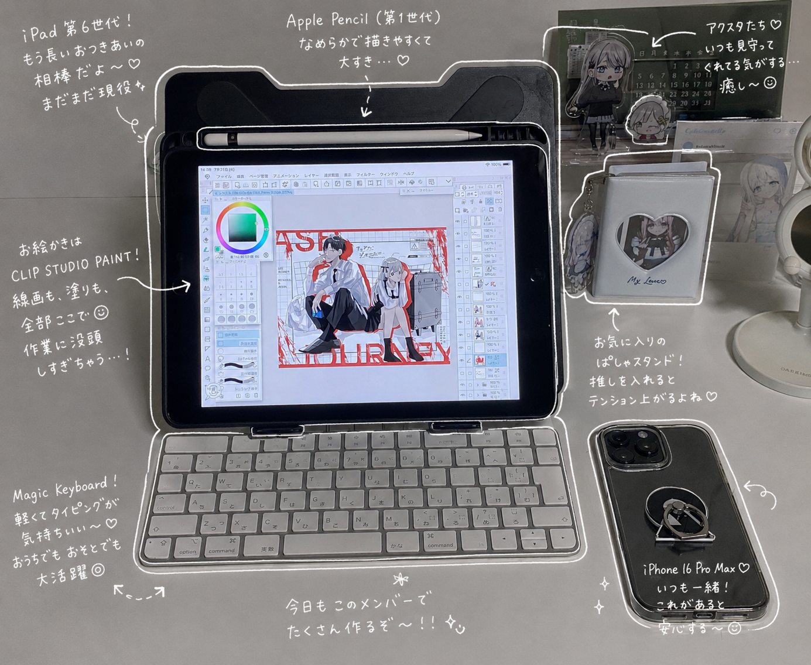
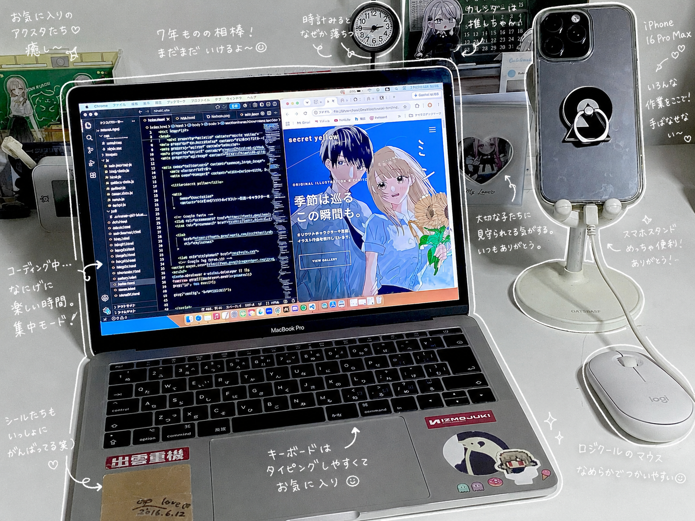
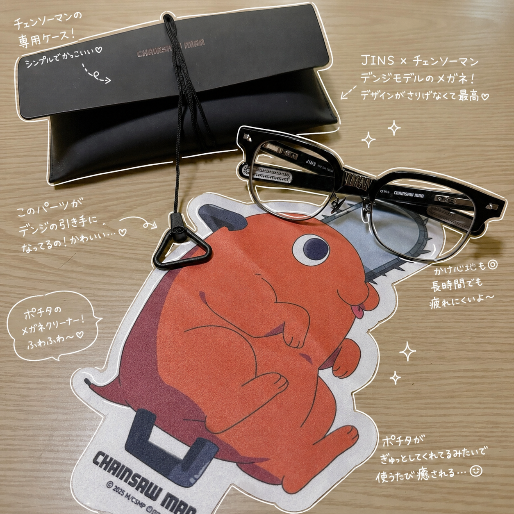

小説編

小説で使っているものたち
・iPhone16Pro Max
・Novel Airline
・Ewin 折りたたみキーボード
・JINS チェンソーマンコラボ（デンジモデル）
漫画や小説を書くときは、できるだけ賑やかな環境で作業しています。
好きな配信者さんのアーカイブを流したり、Lo-Fiの音楽を流したり。その日の気分によって変えています。
使っているのは主にiPhoneです。
思いついたセリフや展開は、まずメモ帳アプリに書き留めます。そのあと、実際の執筆は Novel Airline というアプリで進めています。
操作がとてもシンプルで使いやすく、長く愛用しています。
キーボードは Ewin の折りたたみキーボードを使用しています。
折りたためるのでカフェや福祉センターへ気軽に持ち運べるのがお気に入りです。開くだけでペアリングできるので、すぐに作業を始められるのも嬉しいポイントですね。
メガネはJINSの『チェンソーマン』コラボ、デンジモデルを愛用しています。デザインがかっこよくて、とてもお気に入りです。
BGMは創作に欠かせない存在です。
スピッツや米津玄師を流しながら書く日もあれば、その日の気分で違う音楽を選ぶこともあります。
飲み物はコーヒーやモンスターを片手に、物語の世界へ入り込んでいます。
そして一番大切にしているのは、
「続きを書きたくなるところで終えること。」
そうすると翌日、「続きを書こう」という気持ちで自然と机に向かえる気がしています。
イラスト編

イラストで使っているものたち
・iPad（第6世代）
・Apple Pencil（第1世代）
・CLIP STUDIO PAINT
イラストを描くときは、机の上をできるだけシンプルにしています。……とはいえ、気づくとすぐ散らかってしまうんですけどね（笑）。
使用しているのはiPad（第6世代）とApple Pencil（第1世代）。
どちらも約7年間使い続けている相棒です。
制作ソフトは CLIP STUDIO PAINT を使用しています。
ラフから線画、着彩まで、ほとんどの作品をこのソフトで制作しています。
描き始める前には、そのキャラクターの設定や表情を見返して、
「今日はどんな気持ちなんだろう。」
そんなことを考える時間を大切にしています。
長時間座りっぱなしになることも多いので、途中でコーヒーを飲んだり、一服したりしながら少しずつ進めています。
完成した瞬間ももちろん嬉しいのですが、実は一番好きなのはラフを描いている時間だったりします。
アイデアが少しずつ形になっていくあの瞬間は、何度経験しても楽しいですね。
コーディング編

Webサイトコーディングで使っているものたち
・MacBook Pro（2018・Intel）
・Logicool ワイヤレスマウス
・Visual Studio Code
・HTML / CSS / JavaScript
最近はWebサイトのコーディングにも取り組んでいます。
使っているのは2018年製のIntel MacBook Pro。こちらも約7年間使い続けている相棒です。
マウスはLogicoolのワイヤレスマウスを愛用しています。手になじみやすく、長時間作業していても疲れにくいので気に入っています。
HTML、CSS、JavaScriptを使って、自分のポートフォリオサイト 「secret yellow」 を制作・運営しています。
レイアウトを考えたり、アニメーションを付けたり、思い描いたデザインがブラウザ上で少しずつ形になっていく瞬間は、とても楽しい時間です。
最近では、ギャラリーやブログ機能、404ページなども制作しました。思いどおりに動かなかったり、エラーに悩まされたりすることもありますが、
一つひとつ解決して完成したときの達成感は格別です。
デザインは「考える楽しさ」、コーディングは「作る楽しさ」があると思っています。
おわりに
小説とイラストでは作業環境は少し違いますが、どちらも自分が心地よく創作できる環境を大切にしています。
これからも、自分らしいペースで作品を作り続けていきたいと思います。
また少しずつ制作の様子や創作のことも、このブログで紹介していけたらと思います。
皆さんは、どんな環境で創作していますか？お気に入りのアイテムや作業場所があれば、ぜひ教えてください。
